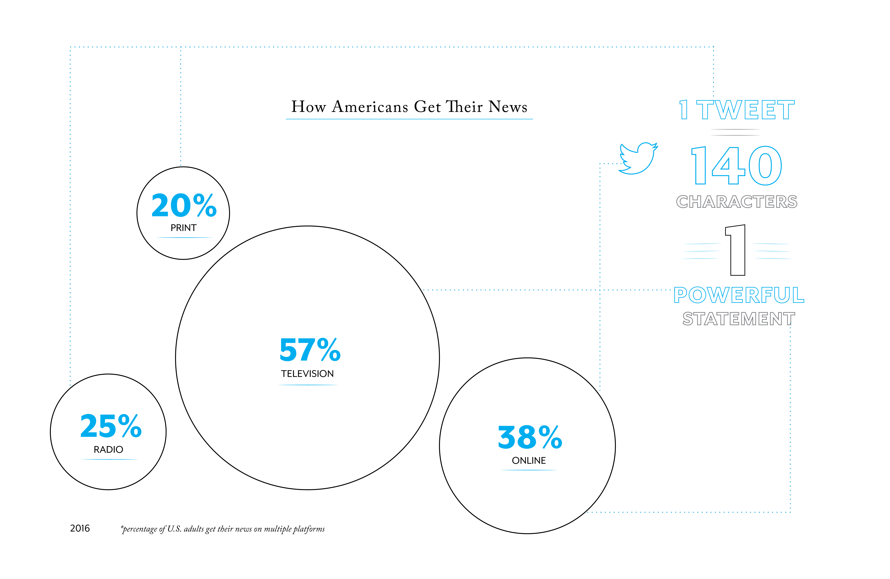
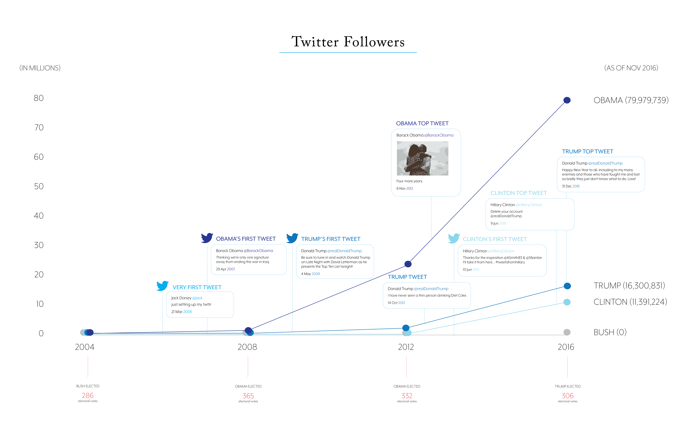
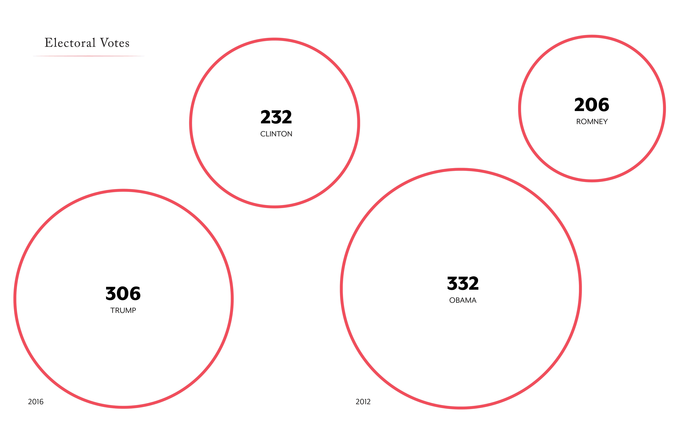
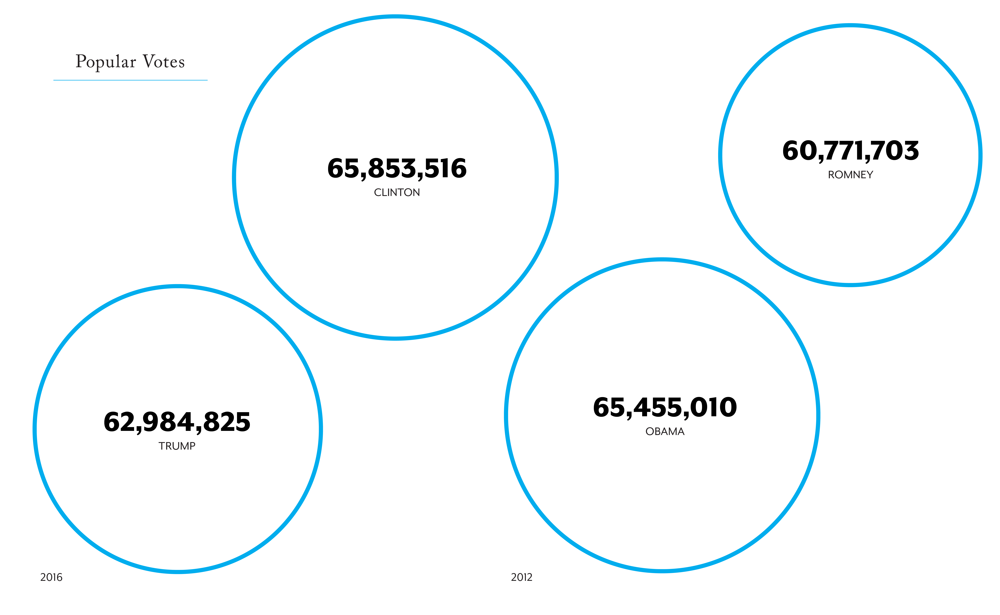

Data visualizations exploring how Twitter posts in the media can influence our idea of truth, and ultimately how we decide to vote.
Many people may not have a Twitter account themselves, but that won't stop tweets from showing up on the evening news, the radio, and other social media platforms.

source: pew research center
If we look at the impact of social media over time, we see an increase
in users. Since 2008, the presidential candidate with the most Twitter followers also won the presidential campaign.

Social media makes it easy to spread information, some of which is fake. We have to be aware that not everything online is true, and will ultimately influence the way we decide to vote.

